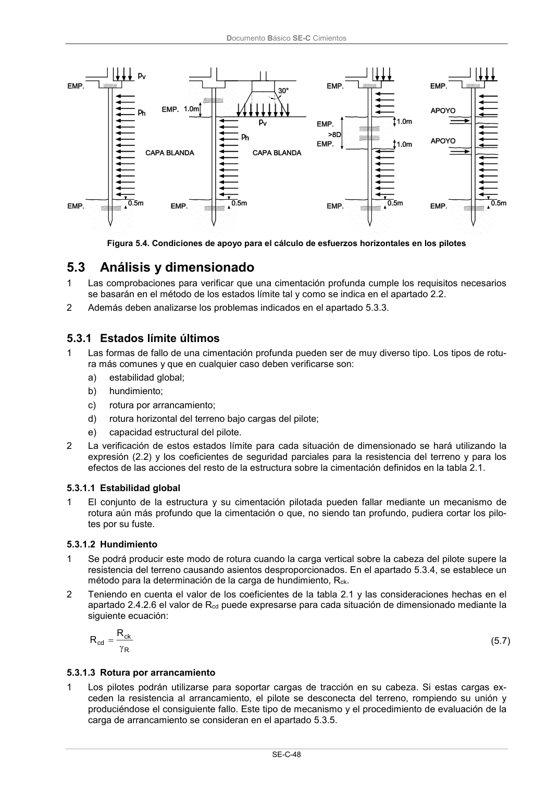

DB-SE-C · 5.3.1.3 Rotura por arrancamiento · versión 2019-12-20 · capa oficial
Formatos: JSON compacto · Markdown · PDF fuente
Ámbito del documento · texto del ámbito · documento y tablas
ID técnico a0121 · PDF pág. 53-54 · jerarquía no validada por persona · contrastado con el literal de la página 53 (candidato tipográfico); no validado por persona · padre: a0118
5.3.1.3 Rotura por arrancamiento 1 Los pilotes podrán utilizarse para soportar cargas de tracción en su cabeza. Si estas cargas ex- ceden la resistencia al arrancamiento, el pilote se desconecta del terreno, rompiendo su unión y produciéndose el consiguiente fallo. Este tipo de mecanismo y el procedimiento de evaluación de la carga de arrancamiento se consideran en el apartado 5.3.5. Documento Básico SE-C Cimientos SE-C-49

PDF fuente redistribuible: copia fiel enlazada en esta página (SHA256 verificado).